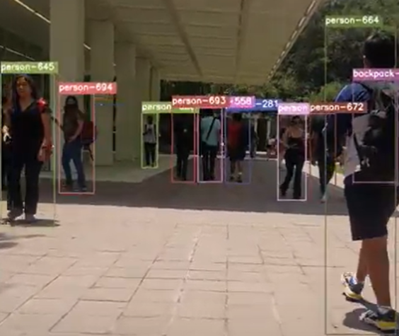
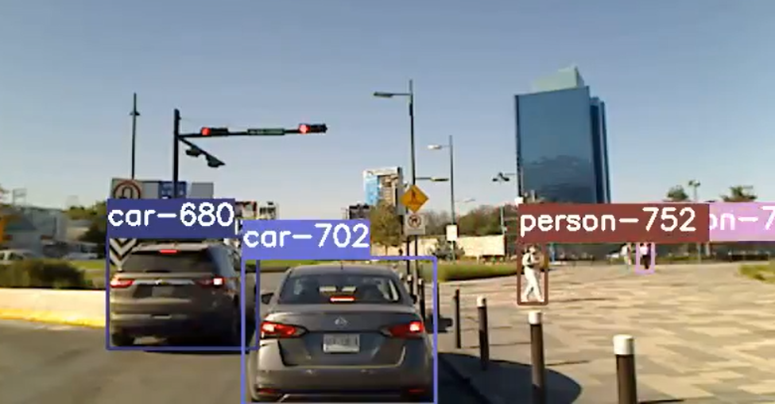

DESARROLLO DE PROTOTIPO DE SOFTWARE
Urban Vlogger: Towards Conscious Mobility
The objective of the project is to obtain real information on the mobility of the city, to design and plan urban space recommendations to create a sustainable and smart city according to the SDGs, while becoming aware of the ecological footprint that people generate every day with their actions. This is achieved through the analysis of videos using object detection and tracking algorithms, which allow to know the urban characteristics of a specific route or environment for further analysis.



Contacto
Karen Rodríguez A01197734@tec.mx